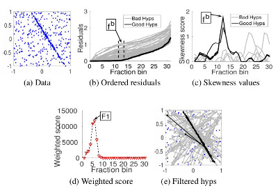

Lokender Tiwari
I am a research scientist at TCS Research , where I work on problems related to computer vision, graphics and deep learning. Prior to this, I was working at NEC Laboratories America , with Prof. Manmohan Chandraker , Dr. Quoc-Huy Tran , and Dr. Pan Ji on self-improving framework for SLAM . I received my PhD from IIIT-Delhi , where I was advised by Dr. Saket Anand and funded by the Visvesvarya PhD fellowship .
I am the recipient of Chancellor's Gold Medal for academic excellence in B.Tech (Computer Science and Engineering) 2008-2012.
Research : I am interested in developing robust solutions for scene understanding (e.g SfM/SLAM, image-based 3D modeling, classification, detection). From the computer graphic'ss side, I am interested in motion capture, animation, and telepresence. Applications : Autonomous Driving, Robotics, AR/VR, Gaming, Robust Classification and Detection Systems (Image, Text and Audio).
Email | Google Scholar | LinkedIn | Github
News
[July/2020 ] Self-improving SLAM and Depth Predictions accepted in ECCV 2020
[June/2020 ] REGroup . A test time replacement of Softmax for robust predictions, Project Page
[June/2020 ] I will be a volunteer for ICML 2020
[Apr/2020 ] I will be a volunteer for ICLR 2020
REGroup: Rank-aggregating Ensemble of Generative Classifiers for Robust Predictions Lokender Tiwari , Anish Madan, Saket Anand, Subhasis Banerjee, IEEE Winter Conference on Computer Vision (WACV ), 2022
(to appear)
DeepDraper: Fast and Accurate 3D Garment Draping over a 3D Human Body Lokender Tiwari , Brojeshwar Bhowmick, Workshop on Differentiable 3D Vision and Graphics International Conference on Computer Vision (ICCV ) , 2021
(to appear)
Pseudo RGB-D for Self-Improving Monocular SLAM and Depth Prediction Lokender Tiwari , Pan Ji, Quoc-Huy Tran, Bingbing Zhuang, Saket Anand, Manmohan Chandraker, European Conference on Computer Vision (ECCV ) , 2020
DGSAC: Density Guided Sampling and Consensus Lokender Tiwari , Saket Anand IEEE Winter Conference on Computer Vision (WACV ) , 2018
Robust Multi-Model Fitting using Density and Preference Analysis Lokender Tiwari , Saket Anand, Sushil MittalAsian Conference on Computer Vision (ACCV ) , 2016

Fast Hypothesis Filtering for Multi-Structure Geometric Model Fitting Lokender Tiwari , Saket Anand IEEE International Conference on Image Processing (ICIP ) , 2016
Machine Learning (UG,PG) Instructors : Dr. Saket Anand, Prof. Anubha Gupta
Computer Vision (UG,PG) Instructors : Dr. Saket Anand
Computer Graphics (UG,PG) Instructors : Dr. Ojaswa Sharma
Data Structure & Algorithms (UG, PG) Tutor
Technical Communication (UG) Instructors : Prof. Pankaj Jalote
,
Professional Services
Reviewer:
IEEE Transactions on Circuits and Systems for Video Technology (TCSVT)
IEEE Transactions on Industrial Electronics
Elsevier Pattern Recognition
IEEE Access
IEEE Sensors
IEEE Winter Conference on Computer Vision (WACV)
IEEE International Conference on Multimedia & Expo (ICME)
Volunteer:
International Conference on Learning Representations (ICLR) 2020
International Conference on Machine Learning (ICML) 2020
[ICCVW 2021] DeepDraper : Fast and Accurate 3D Garment Draping over a 3D Human Body
VIDEO
[ECCV 2020] Our proposed Pseudo RGB-D SLAM vs RGB SLAM
VIDEO


![[NEW]](./new.png)

{kind=link}
{kind=link}
{kind=link}
{kind=link}
{kind=link}